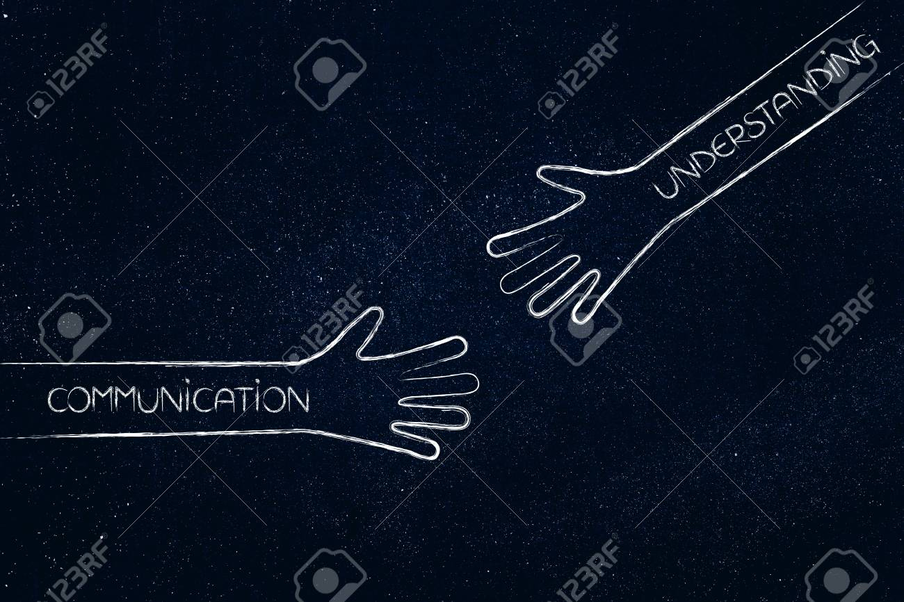

Support
Its Essential
Its Needed
Emotional Relief and Validation, Mental health struggles often feel isolating, and having support from friends, family, or professionals can provide a sense of connection and validation. Support allows individuals to express their feelings without judgment, helping them to process emotions more effectively. Guidance and Perspective, Support systems, including mental health professionals and peer groups, can offer new perspectives and coping strategies. A therapist, for instance, can help someone navigate complex emotions, while a support group provides shared experiences that can lead to feelings of camaraderie. Promotes Healing and Recovery, Positive social interactions and professional support play a critical role in recovery. The encouragement and guidance from others can foster resilience, giving individuals the strength to manage their conditions and improve their quality of life.
Organizations
Theirs always help

National Alliance on Mental Illness (NAMI), NAMI offers support groups, educational resources, and advocacy for individuals facing mental health challenges. They have a helpline and various local chapters across the U.S. Mental Health America (MHA), MHA focuses on promoting mental health as a critical part of overall wellness. They offer mental health screenings and resources for individuals and communities The Anxiety and Depression Association of America (ADAA), ADAA focuses on education, prevention, treatment, and cure of anxiety, depression, and related disorders through webinars, support groups, and access to mental health professionals.